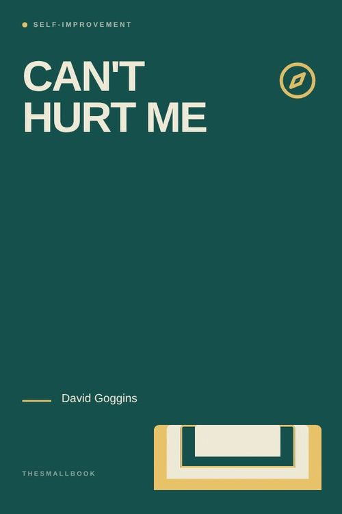
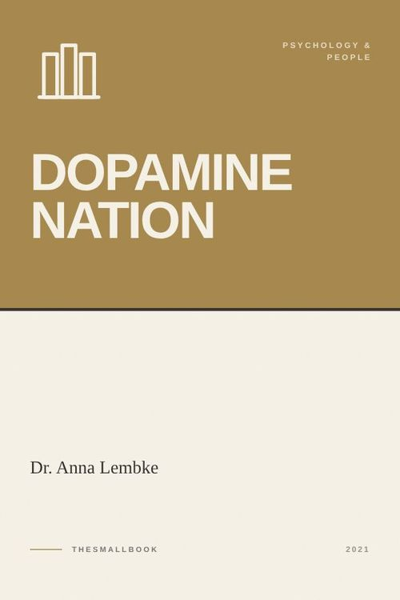

Library › Ask the Library › How do I stay disciplined every day?
How do I stay disciplined every day?
The short answer
Motivation is a wave; discipline is a dam. You don't rise to your goals, you fall to your systems. Design the system so discipline is the default.
The books behind the answer

Atomic Habits
James Clear · 2018 · 11 min · 8 lessons
Getting 1% better every day compounds into a completely different life. Habits are the compound interest of self-improvement.
- Make It Obvious: Environment beats willpower: put the cue in your face and the temptation out of reach.

Can't Hurt Me
David Goggins · 2018 · 9 min · 7 lessons
You're only using 40% of your capability. The other 60% sits behind a wall of suffering your mind built to protect you.
- The 40% Rule: Discipline is deciding who you are and proving it daily, even at 40% energy.

Dopamine Nation
Dr. Anna Lembke · 2021 · 8 min · 6 lessons
Pleasure and pain share one brain circuit - press pleasure too often and the brain fights back with pain. The fix: deliberate discomfort and dopamine fasts.
- The Dopamine Fast: 30 Days to Reset the Balance: Your motivation is hijacked by cheap hits. Reset the baseline with boredom and effort.

The 5 AM Club
Robin Sharma · 2018 · 8 min · 6 lessons
Win the first hour and you win the day: 20 minutes of sweat, 20 of reflection, 20 of growth - before the world wakes up.
- The 20/20/20 Formula: Win the morning and the day follows: move, reflect, grow, before the world wakes up.
A failure that proves it
Why did Chernobyl fail?
1986 · EGO · Loss: Uninhabitable zone, countless lives
Chernobyl's operators ignored procedure 'just this once'. Discipline is the rule you follow even when nobody's watching.
Cultures that punish bad news manufacture catastrophes, then are surprised by them. The truth was available at every step; the hierarchy just made it unspeakable. What you don't allow said, you'll eventually see exploded.
Also asked in Hindi and Hinglish
People also ask this as: discipline kaise banaye, roz time par kaam kaise karein. The answer on this page stays in simple English, and the live book can be read in Hindi or Hinglish.
Questions people ask next
Can I read this in Hindi?
Yes. This answer is written in simple English. Open any linked book and choose Hindi or Hinglish to read the full lessons in your language, with audio where available.